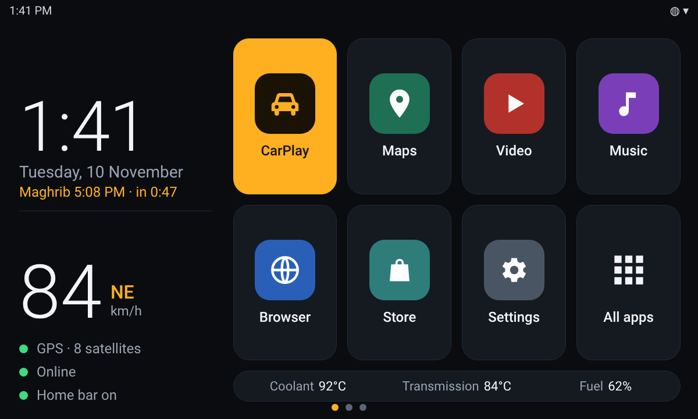
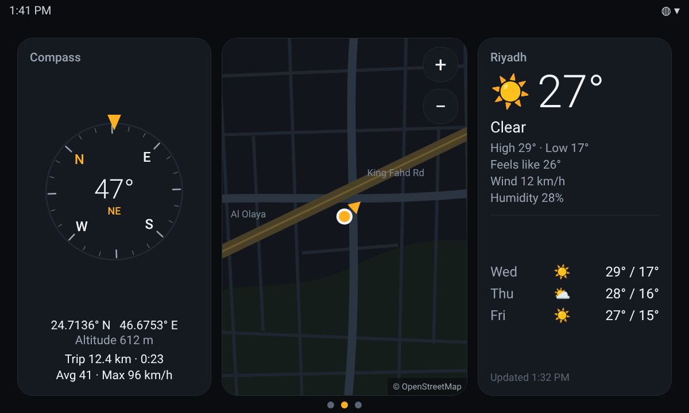
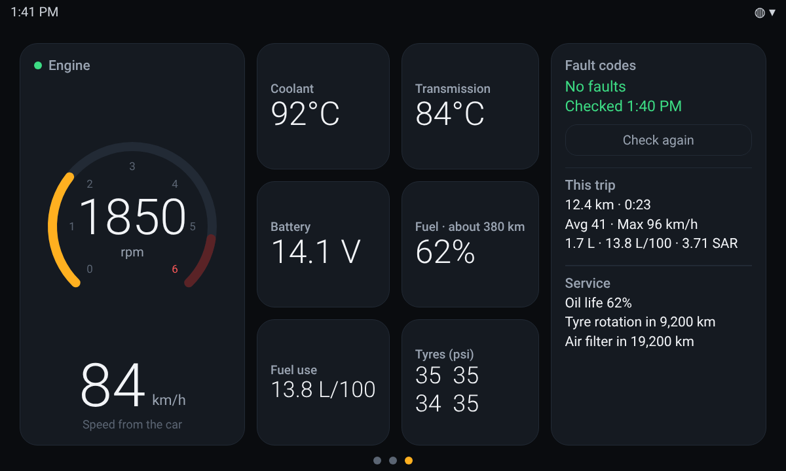
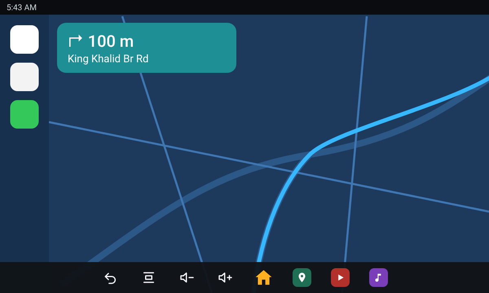
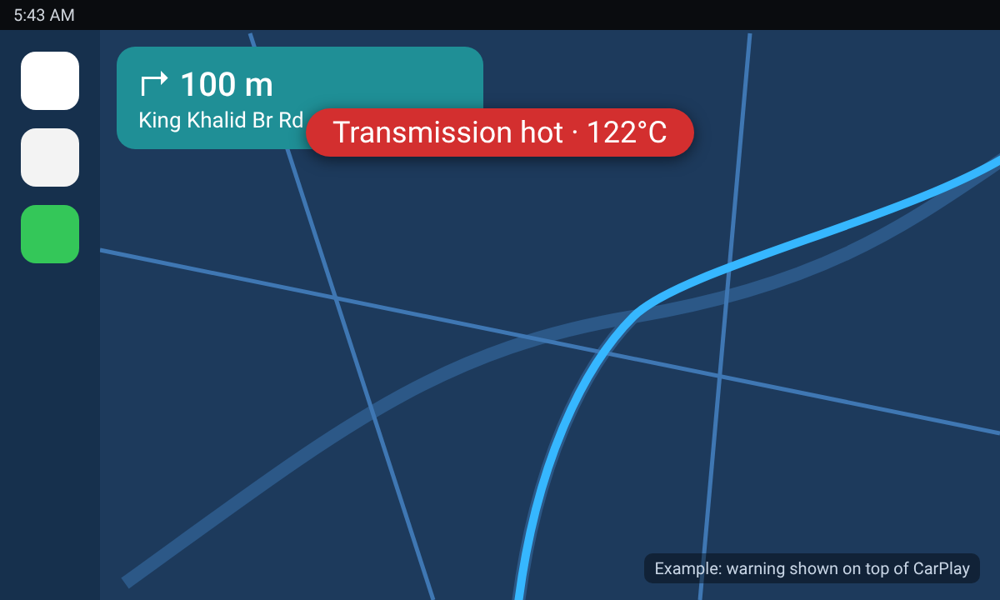

مسار واجهة رئيسية لشاشات أندرويد في السيارات. خانات كبيرة تضغطها دون أن تنظر، سرعتك وموعد الصلاة القادمة بنظرة واحدة، بيانات المحرك مباشرة من قطعة OBD، وطريق للعودة إلى الرئيسية من كاربلاي.
التحميل برمز · أندرويد 8 وما بعده

كل المقاسات مأخوذة من الشاشة نفسها، فيظهر بالشكل ذاته على أي شاشة. بلا حساب، بلا إعلانات، بلا تتبّع.
تطبيقاتك، وكاربلاي في المقدمة. اضغط مطوّلاً على أي خانة لتغييرها. وعلى الجانب: الساعة والتاريخ والسرعة والاتجاه من GPS.
المس الشاشة في كاربلاي أو الخريطة فيظهر شريط فيه الرئيسية والرجوع والصوت وتطبيقاتك لبضع ثوانٍ، ثم يختفي.
مع قطعة OBD بلوتوث: دورات المحرك، حرارة المحرك والقير، البطارية، الوقود، الاستهلاك، وأكواد الأعطال بكلمات مفهومة.
ارتفاع حرارة المحرك أو القير، خلل في الشحن، إطار منخفض الضغط أو كود عطل جديد: شريط أحمر فوق أي شيء معروض على الشاشة.
بوصلة تدور مع اتجاه السير، خريطة صغيرة تتبع السيارة، وتوقعات الطقس لثلاثة أيام في موقعك.
كل مشوار يُحسب تلقائياً: المسافة والوقت والمتوسط والوقود المستهلك وتكلفته. وتُحفظ الرحلات السابقة مع مكان انتهاء كل رحلة.
الصلاة القادمة والوقت المتبقي لها، تُحسب على الجهاز نفسه وفق تقويم أم القرى. لا حاجة للإنترنت.
عربي أو إنجليزي، تعتيم بعد الغروب حتى لا تبهرك الشاشة، ستة ألوان وصورة خلفية من اختيارك.
ما حولك.

ما يفعله المحرك الآن، يُقرأ عبر قطعة ELM327 بلوتوث عادي في منفذ OBD.

التطبيقات التي تملأ الشاشة تُخفي أزرار الجهاز. مسار يعيدها لك عندما تطلبها فقط.

يواصل مسار مراقبة السيارة وكاربلاي في الواجهة، ولا ينبّهك إلا إذا تجاوز شيءٌ حدّه الطبيعي.

الصور تصاميم توضيحية بمقاس 1200 × 720 وبأرقام للمثال، والتطبيق فيها بالإنجليزية. ما يظهر لك يعتمد على شاشتك وسيارتك وقطعة OBD.
مسار تطبيق أندرويد عادي. ليس على متجر Play؛ تحمّل ملف APK برمز تحصل عليه من المطوّر وتثبّته بنفسك.
من الكمبيوتر: adb install -r masar.apk. وللتراجع اختر واجهة أخرى من الإعدادات ← التطبيقات ← التطبيقات الافتراضية ← تطبيق الشاشة الرئيسية. جُرِّب على شاشة أندرويد 10 بمقاس 1200 × 720؛ يُفترض أن يعمل على غيرها لكنه لم يُجرَّب.